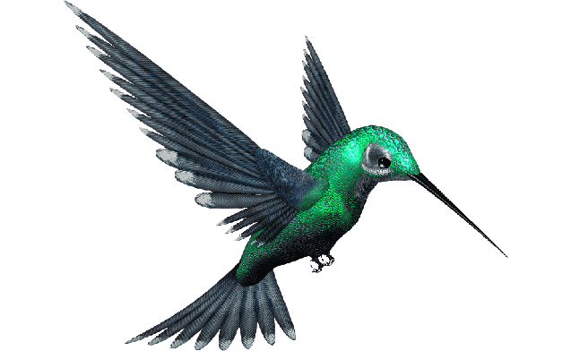

Os beija-flores são pequenas aves conhecidas por sua habilidade de voar parado no ar, graças às suas asas rápidas e batidas. Eles pertencem à família Trochilidae e são encontrados exclusivamente nas Américas, desde o Alasca até a Terra do Fogo. Com mais de 300 espécies conhecidas, os beija-flores são um dos grupos de aves mais diversos do mundo.
Os beija-flores são conhecidos por sua dieta exclusiva de néctar e pequenos insetos. Eles têm um bico longo e fino que lhes permite acessar o néctar de flores profundas, além de uma língua bifurcada que se divide na ponta para sugar o néctar com eficiência. Sua alimentação de néctar é tão importante que eles têm um papel fundamental na polinização de muitas espécies de plantas. Além disso, sua capacidade de voar em várias direções, de cabeça para baixo e em zigue-zague, faz com que sejam importantes polinizadores de plantas em áreas de difícil acesso.
Os beija-flores são animais fascinantes e populares para observação de pássaros. Muitas espécies são migratórias e viajam centenas ou até milhares de quilômetros por ano. Eles são encontrados em uma variedade de habitats, desde florestas tropicais a desertos e pradarias. Infelizmente, muitas espécies de beija-flores estão ameaçadas devido à perda de habitat, mudanças climáticas e uso de pesticidas que afetam sua alimentação de néctar.